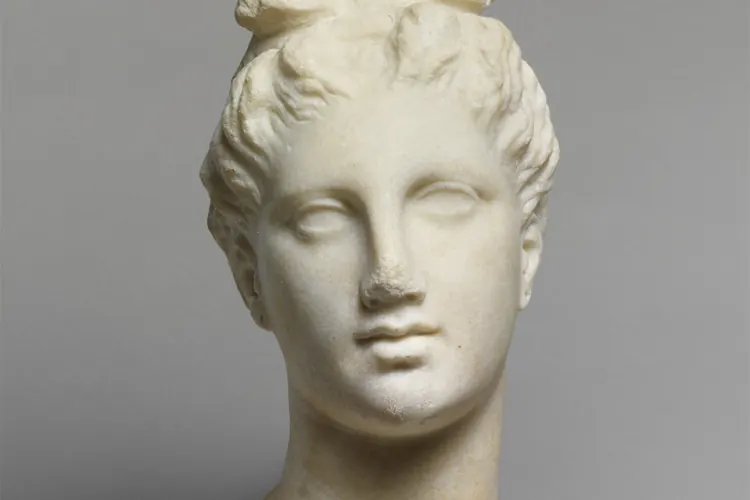

Сон, вода и SPF: скучная тройка, которая работает
Прежде чем тратиться на сложные процедуры, проверьте три привычки, которые дерматологи считают фундаментом ухода за собой.

Софтмаксинг, то есть улучшение внешности без хирургии и радикальных мер, легко превратить в коллекцию сывороток, гаджетов и ритуалов из двенадцати шагов. Но у самых заметных результатов обычно самая скучная причина. Сон, вода и солнцезащитный крем плохо смотрятся в ленте, зато работают каждый день.
Сон как основа
Взрослым обычно рекомендуют спать от 7 до 9 часов. Не менее важен режим: ложиться и вставать примерно в одно и то же время, в том числе по выходным. Организму проще восстанавливаться, когда ритм стабилен. Засыпать мешают яркий экран в постели и кофе во второй половине дня, так что вечер лучше заканчивать без них.
Недосып проявляется на лице быстрее, чем кажется. Отёчность, тусклый тон и тени под глазами нередко связаны именно с ним. Хронический недостаток сна влияет и на аппетит, и на настроение, а значит, косвенно на всё остальное, что вы делаете ради внешности.
SPF каждый день
Ультрафиолет считается главной внешней причиной фотостарения кожи: морщин, пигментных пятен, потери упругости. Поэтому дерматологи советуют наносить солнцезащитное средство ежедневно, а не только в отпуске. Пасмурная погода и зима не отменяют правило: заметная часть ультрафиолета проходит сквозь облака.
Если вы долго на улице, купаетесь или потеете, средство нужно обновлять. Лучшим окажется тот SPF, которым вам комфортно пользоваться каждый день.
«Если оставить только одну привычку, я оставлю SPF. Крем, который вы наносите каждое утро, за десять лет сделает для кожи больше, чем любая модная процедура.»
Уход и вода без мифов
Базовый уход сводится к двум средствам: мягкому очищающему и увлажняющему крему. Агрессивные скрабы и спиртовые тоники часто дают обратный эффект: кожа пересушивается и раздражается. Новые средства лучше вводить по одному, чтобы понимать, на что именно реагирует кожа.
Вокруг воды мифов больше, чем вокруг кремов. Здоровому взрослому обычно достаточно пить по жажде, а в жару и при физической нагрузке пить больше. Сильное обезвоживание действительно сказывается и на самочувствии, и на виде кожи. Но лишние литры сверх потребности не разгладят морщины и не заменят увлажняющее средство.
Ещё одна незаметная привычка: не трогать лицо без необходимости и не выдавливать прыщи. С рук на кожу попадают бактерии, а на месте выдавленного воспаления могут остаться пятна и рубцы. Если тянет трогать или ковырять кожу машинально и остановиться трудно, это повод обсудить привычку с врачом.
Минимальная ежедневная схема выглядит так:
- Утром умыться мягким средством и нанести увлажняющий крем
- Нанести SPF на лицо, шею и уши, обновлять при долгом пребывании на солнце
- Вечером смыть SPF и загрязнения, снова нанести крем
- Пить воду по жажде и не трогать лицо руками
- Ложиться и вставать в одно и то же время
Важная оговорка. Акне, розацеа, дерматит и другие кожные заболевания не лечатся рутинами из интернета. Это задача для дерматолога: врач подберёт терапию с учётом формы болезни и особенностей кожи, а скучная тройка останется фоном, который поддерживает лечение.
У базовых привычек нет эффекта «до и после» за неделю. Результат накапливается месяцами, и именно поэтому его так легко недооценить. Зато он не исчезает, когда заканчивается абонемент в салон.